청소년상담사-3급(2교시) (2022-10-08 기출문제)
1과목: 학습이론
1. 지식과 기능의 구인, 정신적 구조와 기억네트워크의 발달, 정보처리과정 등을 강조하는 학습이론으로 옳은 것은?
- 행동주의이론
- 인지주의이론
- 인본주의이론
- 생태주의이론
- 정신분석이론
(정답률: 알수없음)

2. 습득된 지식과 기능이 새로운 맥락이나 상황에 새로운 방식으로 적용되는 것은?
- 부호화(encoding)
- 전이(transfer)
- 민감화(sensitization)
- 습성화(habituation)
- 감각적 적응(sensory adaptation)
(정답률: 알수없음)
3. 헐(C. Hull)이 제시한 공리(postulates)에 해당하지 않는 것은?
- 하나의 행동은 하나의 자극에 의해 발생한다.
- 유기체는 욕구가 생길 때 유발되는 반응 위계를 가지고 태어난다.
- 강화는 추동 감소이다.
- 만일 자극이 반응을 유도하고 반응이 생리적 욕구를 만족시키면 자극과 반응의 관계는 강해진다.
- 반응제지는 근육활동으로 인한 피로에 의해 유발되며 과제수행을 위한 작업량과도 관계된다.
(정답률: 알수없음)
4. 행동주의 학습이론에서 다음 설명에 해당하는 것은?
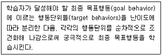
- 조성(shaping)
- 대체 강화(backup reinforcement)
- 프리맥의 원리(Premack principle)
- 역치법(threshold)
- 모순된 반응법(incompatible response method)
(정답률: 알수없음)
5. 처벌의 효과적 사용을 위한 지침으로 옳지 않은 것은?
- 처벌은 일관성이 있어야 한다.
- 처벌받는 행동이 받아들여질 수 없는 이유에 대해 설명해 주어야 한다.
- 처벌받는 행동을 대신할 바람직한 행동에 대한 학습 기회를 제공해야 한다.
- 처벌받는 행동은 분명하고 구체적인 용어로 제시되어야 한다.
- 처벌은 시차를 두고 부적절한 행동들을 취합한 후 주어져야 한다.
(정답률: 알수없음)
6. 자기교시법(self-instruction)의 단계 중 다음 사례에 해당하는 것은?
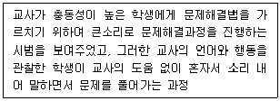
- 외현적 지도
- 인지적 재구성
- 외현적 자기안내
- 내재적 자기지시
- 외현적 자기안내의 소멸
(정답률: 알수없음)
7. 션크와 루드(D. Schunk & H. Rude)가 제시한 효과적인 모방학습 모델의 특성에 해당하지 않는 것을 모두 고른 것은?
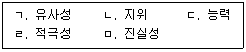
- ㄱ, ㄴ
- ㄱ, ㅁ
- ㄴ, ㄷ
- ㄷ, ㄹ
- ㄹ, ㅁ
(정답률: 알수없음)
8. 다음 사례에 해당하는 강화계획으로 옳은 것은?
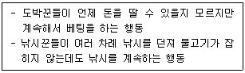
- 연속강화
- 고정간격강화
- 변동간격강화
- 고정비율강화
- 변동비율강화
(정답률: 알수없음)
9. 학습의 정의에 관한 설명으로 옳은 것은?
- 유기체가 속한 종(種) 특유의 행동(species-specific behavior)
- 유기체의 경험에 의해 비교적 영속적으로 변화된 행동
- 유기체가 속한 종(種)의 계통발생학적 행동
- 약물에 의해 일시적으로 변화된 행동
- 유전인자에 의한 행동
(정답률: 알수없음)
10. 반두라(A. Bandura)가 제시한 모방학습의 과정을 순서대로 옳게 나열한 것은?
- 주의과정-파지과정-운동 재생산 과정-동기과정
- 주의과정-파지과정-동기과정 -운동 재생산 과정
- 주의과정-운동 재생산 과정 -파지과정-동기과정
- 파지과정-주의과정-동기과정 -운동 재생산 과정
- 파지과정-동기과정-주의과정 -운동 재생산 과정
(정답률: 알수없음)
11. 행동주의 학습이론에서 다음 사례에 해당하는 것은?
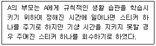
- 질책(reprimands)
- 타임아웃(time-out)
- 과잉교정(overcorrection)
- 자동강화(automatic reinforcement)
- 반응대가(response-cost)
(정답률: 알수없음)
12. 고전적 조건형성에서 다음 사례에 해당하는 것은?
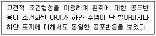
- 변별(discrimination)
- 소거(extinction)
- 일반화(generalization)
- 자발적 회복(spontaneous recovery)
- 고차적 조건화(higher-order conditioning)
(정답률: 알수없음)
13. 다음 중 고전적 조건형성의 원리를 응용한 상담의 기법을 모두 고른 것은?
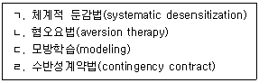
- ㄱ, ㄴ
- ㄱ, ㄷ
- ㄴ, ㄷ
- ㄴ, ㄹ
- ㄷ, ㄹ
(정답률: 알수없음)
14. 매슬로우(A. Maslow)의 욕구단계이론에 관한 설명으로 옳지 않은 것은?
- 자아실현 욕구는 모든 인간에게 내재되어 있다.
- 자존감 욕구는 성장욕구에 해당한다.
- 생존에 필수적인 욕구와 성장을 추구하는 욕구가 있다.
- 생리적인 욕구는 평형을 유지하려는 욕구이다.
- 자아실현 욕구는 완전히 만족되지 않는다.
(정답률: 알수없음)
15. 톨만(E. Tolman)의 학습이론에 관한 설명으로 옳지 않은 것은?
- 강화(reinforcement)는 학습에 필수적이지 않다.
- 학습된 것이 행동으로 드러나지 않을 수 있다.
- 보상의 유무는 학습된 결과가 행동으로 나타나는 것에 영향을 미친다.
- 학습의 결과는 인지도(cognitive map)로 만들어진다.
- 학습은 점진적이 아니라 갑자기 이루어진다.
(정답률: 알수없음)
16. 성취목표 중 숙달목표(mastery goal)와 수행목표(performance goal)에 관한 설명으로 옳지 않은 것은?
- 수행목표는 남의 눈에 유능하게 보이는 것에 해당한다.
- 숙달목표는 스스로 더 유능한 사람이 되려는 것에 해당한다.
- 숙달목표 지향적인 사람은 학습과 행동을 스스로 조절한다.
- 수행목표 지향적인 사람은 선생님을 조언자로 여긴다.
- 숙달목표 지향적인 사람은 실패를 해도 수행에 만족할 수 있다.
(정답률: 알수없음)
17. 뇌 발달에 관한 설명으로 옳지 않은 것은?
- 성인기 이후에도 신경생성(neurogenesis)은 계속된다.
- 거울뉴런(mirror neuron)은 타인의 행동을 마치 자신의 행동을 보는 것처럼 느끼게 하는 뉴런이다.
- 신생아의 뇌를 구성하는 뉴런의 숫자는 성인의 25 %에 불과하다.
- 전두엽 발달은 유아기 때 빠르며, 사춘기 이후에도 계속된다.
- 뉴런의 두께가 두꺼워지는 과정을 수초화라고 하며, 수초화가 된 뉴런은 정보를 더 빨리 전달한다.
(정답률: 알수없음)
18. 다음 사례를 설명하는 기억 이론은 무엇인가?
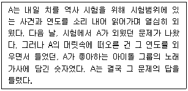
- 파이비오(A. Paivio)의 이중부호이론
- 크레이그와 록하트(F. Craik & R. Lockhart)의 처리수준이론
- 배들리와 힛치(A. Baddeley & G. Hitch)의 작업기억이론
- 앳킨슨과 쉬프린(R. Atkinson & R. Shiffrin)의 이중기억이론
- 스펜스(C. Spence)의 S-R이론
(정답률: 알수없음)
19. 기억에 관한 설명으로 옳지 않은 것은?
- 메타인지 전략으로는 계획하기, 평가하기, 점검하기 등이 있다.
- 나중에 학습한 정보가 앞서 학습한 정보의 회상을 방해하는 것을 역행간섭(역행제지)이라고 한다.
- 감각등록기(sensory register)는 매우 짧은 시간동안 많은 정보를 저장한다.
- 기억의 이중구조 모형에 따르면 정보는 병렬적으로 처리된다.
- 기억은 재인 기억과 회상 기억으로 나눌 수 있다.
(정답률: 알수없음)
20. 다음에 제시한 사례와 이를 설명하는 이론을 옳게 짝지은 것은?
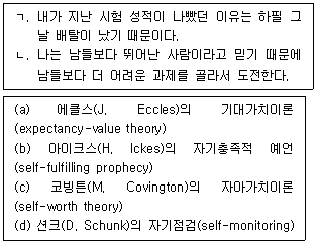
- ㄱ - a, ㄴ – b
- ㄱ - b, ㄴ – c
- ㄱ - b, ㄴ - d
- ㄱ - d, ㄴ – c
- ㄱ - c, ㄴ - a
(정답률: 알수없음)
21. 학습과 수행에 관한 이론 중에서 다음 사례를 설명하는 것은?
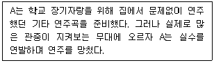
- 칙센트미하이(M. Csikszentmilhalyi)의 몰입(flow)
- 드웩(C. Dwek)의 마인드셋(mindset)
- 헵(D. Hebb)의 최적각성수준(optimal level of arousal)
- 헐(C. Hull)의 추동감소 모형(drive reduction model)
- 손다이크(E. Thorndike)의 효과의 법칙(law of effect)
(정답률: 알수없음)
22. 학습 동기에 관한 이론 중에서 다음 사례에 해당하는 것은?
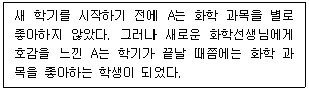
- 솔로몬(R. Solomon)의 반대과정이론
- 켈러(F. Keller)의 ARCS이론
- 하이더(F. Heider)의 균형이론
- 로터(J. Rotter)의 통제소재이론
- 우드워드(R. Woodworth)의 태도확산이론
(정답률: 알수없음)
23. 다음 ( ) 안에 들어갈 내용은?
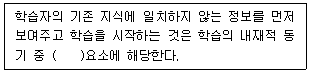
- 상상
- 통제
- 호기심
- 도전
- 근접
(정답률: 알수없음)
24. 라이언과 데시(R. Ryan & E. Deci)의 자기결정성 이론의 관점에서 외재적 동기의 내면화 수준이 낮은 것에서 높은 것의 순서대로 옳게 나열한 것은?
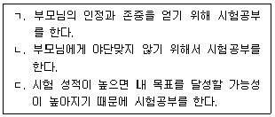
- ㄱ - ㄴ – ㄷ
- ㄱ - ㄷ – ㄴ
- ㄴ - ㄱ – ㄷ
- ㄴ - ㄷ – ㄱ
- ㄷ - ㄴ - ㄱ
(정답률: 알수없음)
25. 어떤 사건이나 정보를 기억할 때 그 기억에 감정을 결합시키는 역할을 하는 뇌의 부위는?
- 전두엽(frontal lobe)
- 시상(thalamus)
- 시상하부(hypothalamus)
- 편도체(amygdala)
- 측두엽(temporal lobe)
(정답률: 알수없음)
2과목: 청소년 이해론
26. 청소년심리에 대한 주요 이론과 학자의 연결이 옳은 것은?
- 장이론 - 반두라(A. Bandura)
- 경험학습이론 - 콜버그(L. Kohlberg)
- 재현이론 - 홀(S. Hall)
- 신경생리학습이론 - 뢰빙거(J. Loevinger)
- 사회학습이론 - 에릭슨(E. Erikson)
(정답률: 알수없음)
27. 브론펜브레너(U. Bronfenbrenner)의 생태학적 이론에서 청소년 환경체계에 관한 설명으로 옳은 것을 모두 고른 것은?
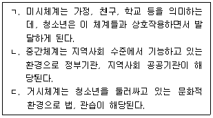
- ㄱ
- ㄴ
- ㄱ, ㄷ
- ㄴ, ㄷ
- ㄱ, ㄴ, ㄷ
(정답률: 알수없음)
28. 진로선택 및 진로발달을 설명하는 학자와 주요 개념의 연결이 옳은 것은?
- 로우(A. Roe) - 부모의 양육방식과 직업선택의 관계
- 긴즈버그(E. Ginzberg) - 생애역할
- 블라우(P. Blau) - 생애진로발달단계
- 크럼볼츠(J. Krumboltz) - 직업적응유형
- 갓프레드슨(L. Gottfredson) - 진로의사결정유형
(정답률: 알수없음)
29. 바움린드(D. Baumrind)의 부모양육 유형에 관한 내용이다. ( )에 들어갈 내용으로 옳은 것은?
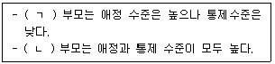
- ㄱ: 권위있는(authoritative), ㄴ: 권위주의적(authoritarian)
- ㄱ: 허용적(permissive), ㄴ: 권위주의적(authoritarian)
- ㄱ: 허용적(permissive), ㄴ: 권위있는(authoritative)
- ㄱ: 무관심한(neglecting), ㄴ: 허용적(permissive)
- ㄱ: 무관심한(neglecting), ㄴ: 권위주의적(authoritarian)
(정답률: 알수없음)
30. 스턴버그(R. Sternberg)가 제안한 사랑의 삼각형 이론에 관한 설명으로 옳은 것을 모두 고른 것은?
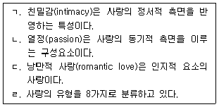
- ㄱ, ㄴ
- ㄱ, ㄷ
- ㄴ, ㄹ
- ㄱ, ㄴ, ㄹ
- ㄴ, ㄷ, ㄹ
(정답률: 알수없음)
31. 안나 프로이트(A. Freud)가 제안한 청소년기 성적 긴장에 적응하기 위한 방어기제에 해당하는 것을 모두 고른 것은?
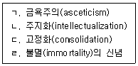
- ㄱ, ㄴ
- ㄷ, ㄹ
- ㄱ, ㄴ, ㄷ
- ㄱ, ㄷ, ㄹ
- ㄱ, ㄴ, ㄷ, ㄹ
(정답률: 알수없음)
32. 특정 문화유형이 다른 문화유형과 상호작용을 거쳐 또 다른 제3의 문화유형을 만들어 내는 문화변동의 현상은?
- 문화전계
- 문화접변
- 문화이식
- 문화결핍
- 문화지체
(정답률: 알수없음)
33. 엘킨드(D. Elkind)의 개인적 우화(personal fable)에 관한 설명으로 옳은 것을 모두 고른 것은?
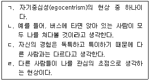
- ㄱ, ㄴ
- ㄱ, ㄷ
- ㄱ, ㄷ, ㄹ
- ㄴ, ㄷ, ㄹ
- ㄱ, ㄴ, ㄷ, ㄹ
(정답률: 알수없음)
34. 만화 속의 캐릭터와 똑같은 패션 스타일과 분위기 및 외모와 개성을 표현하려는 문화 현상은?
- 이모(emo)
- 차브(chav)
- 노마드(nomad)
- 코스프레(cospre)
- 리셋 신드롬(reset syndrome)
(정답률: 알수없음)
35. 근접발달영역(ZPD)의 개념을 통해 인지능력의 발달을 설명하는 학자는?
- 길리건(C. Gilligan)
- 매슬로우(A. Maslow)
- 설리반(H. Sullivan)
- 로저스(C. Rogers)
- 비고츠키(L. Vygotsky)
(정답률: 알수없음)
36. 피아제(J. Piaget)가 제시한 청소년기 인지발달단계의 특징에 해당하지 않는 것은?
- 추상적 사고
- 물활론적 사고
- 가설연역적 사고
- 가능성에 대한 사고
- 사고과정에 대한 사고
(정답률: 알수없음)
37. 청소년문화를 바라보는 관점 중 다음이 설명하는 것은?
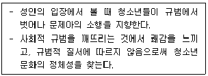
- 미숙한 문화
- 비행문화
- 하위문화
- 준거문화
- 새로운 문화
(정답률: 알수없음)
38. 다음이 설명하는 문화의 속성은?
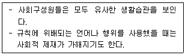
- 공유성
- 다양성
- 체계성
- 축적성
- 가변성
(정답률: 알수없음)
39. 알코올(술)에 관한 설명으로 옳지 않은 것은?
- 중추신경 흥분제이다.
- 심장박동과 호흡을 느리게 하여 과다복용 시 치명적일 수 있다.
- 중독 시 신체적 의존과 심리적 의존을 나타낸다.
- 중독 시 갑자기 복용을 중단하면 금단현상이 일어난다.
- 일반적인 금단현상으로는 신경과민, 구토, 손떨림, 초조함, 불안 등이 나타난다.
(정답률: 알수없음)
40. 소년법상 보호처분에 관한 설명으로 옳은 것은?
- 수강명령은 14세 이상의 소년에게만 할 수 있다.
- 장기 소년원 송치는 14세 이상의 소년에게만 할 수 있다.
- 단기 보호관찰기간은 6개월로 한다.
- 사회봉사명령은 200시간을 초과할 수 없다.
- 장기 보호관찰기간은 2년이며, 3년의 범위에서 한 번에 한하여 그 기간을 연장할 수 있다.
(정답률: 알수없음)
41. 청소년비행에 관한 사회유대이론의 설명으로 옳지 않은 것은?
- 허쉬(T. Hirschi)가 주창하였다.
- 비행을 예방하는 요인으로 사회적 유대감을 중시한다.
- 관습적 신념이 높아지면 비행의 가능성이 높아진다.
- 사회에서 용인된 전통적 목표를 수용하면 비행의 가능성이 낮아진다.
- 4가지의 사회유대요인은 애착(attachment), 헌신(commitment), 참여(involvement), 신념(belief)이다.
(정답률: 알수없음)
42. 청소년복지 지원법상 위기청소년 특별지원에 해당하는 것을 모두 고른 것은?
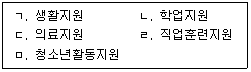
- ㄱ, ㄴ, ㄷ
- ㄴ, ㄹ, ㅁ
- ㄱ, ㄷ, ㄹ, ㅁ
- ㄴ, ㄷ, ㄹ, ㅁ
- ㄱ, ㄴ, ㄷ, ㄹ, ㅁ
(정답률: 알수없음)
43. 학교 밖 청소년 지원에 관한 법률상 학교 밖 청소년을 위한 교육지원에 해당하는 것을 모두 고른 것은?
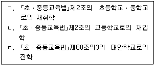
- ㄱ
- ㄴ
- ㄱ, ㄷ
- ㄴ, ㄷ
- ㄱ, ㄴ, ㄷ
(정답률: 알수없음)
44. “지역사회 청소년통합지원체계”에 관한 설명으로 옳지 않은 것은?
- ｢청소년 보호법｣에 근거하여 구축ㆍ운영한다.
- 국가는 구축ㆍ운영을 지원하여야 한다.
- 광역시는 전담기구를 설치할 수 있다.
- 교육청은 필수연계기관이다.
- 관할구역의 위기청소년을 조기에 발견하여 보호하고, 청소년복지 및 청소년보호를 효율적으로 수행함을 목적으로 한다.
(정답률: 알수없음)
45. 청소년복지 지원법상 청소년증에 관한 내용이다. ( )에 들어갈 내용은?
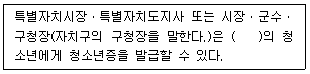
- 9세 이상 15세 미만
- 9세 이상 18세 이하
- 9세 이상 24세 이하
- 13세 이상 18세 미만
- 13세 이상 18세 이하
(정답률: 알수없음)
46. 학교폭력예방 및 대책에 관한 법률상 용어의 정의로 옳지 않은 것은?
- “피해학생”이란 학교폭력으로 인하여 피해를 입은 학생을 말한다.
- “장애학생”이란 신체적ㆍ정신적ㆍ지적 장애 등으로 ｢장애인 등에 대한 특수교육법｣제15조에서 규정하는 특수교육이 필요한 학생을 말한다.
- “가해학생”이란 가해자 중에서 학교폭력을 행사하거나 그 행위에 가담한 학생을 말한다.
- “따돌림”이란 학교 내에서 3명 이상의 학생들이 특정인이나 특정집단의 학생들을 대상으로 심리적 공격을 가하여 상대방이 고통을 느끼도록 하는 모든 행위를 말한다.
- “사이버 따돌림”이란 인터넷, 휴대전화 등 정보통신기기를 이용하여 학생들이 특정 학생들을 대상으로 지속적, 반복적으로 심리적 공격을 가하거나, 특정 학생과 관련된 개인정보 또는 허위사실을 유포하여 상대방이 고통을 느끼도록 하는 모든 행위를 말한다.
(정답률: 알수없음)
47. 다음이 설명하는 유엔아동권리협약의 기본원칙은?
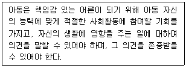
- 무차별의 원칙
- 아동 최선의 이익 원칙
- 생존 및 발달보장의 원칙
- 참여의 원칙
- 보호의 원칙
(정답률: 알수없음)
48. 아동ㆍ청소년의 성보호에 관한 법률상 아동ㆍ청소년대상 성범죄로 유죄판결이 확정된 자의 신상정보를 공개하는 경우, 공개하도록 제공되는 등록정보에 해당되지 않는 것은?
- 사진
- 출신 학교
- 등록대상 성범죄 요지
- 신체정보(키와 몸무게)
- 성폭력범죄 전과사실(죄명 및 횟수)
(정답률: 알수없음)
49. 청소년복지 지원법령상 청소년의 건강보장에 관한 설명으로 옳지 않은 것은?
- 차상위계층에 해당하는 사람의 가구원인 여성청소년은 국가 및 지방자치단체의 생리용품 지원대상이다.
- 여성가족부장관은 청소년의 성장 환경을 고려하여 5년 이내의 기간마다 청소년의 건강ㆍ체력기준을 새로 설정하여야 한다.
- 국가 및 지방자치단체는 청소년의 건강 증진과 체력 향상을 위한 시책으로서 청소년이 참가하는 체육대회를 장려하고, 예산의 범위에서 체육대회 개최에 필요한 경비를 지원할 수 있다.
- 국가 및 지방자치단체는 청소년의 체력검사와 건강진단을 실시할 수 있다.
- 청소년의 체력검사ㆍ건강진단 실시와 그 결과 통보에 필요한 사항은 대통령령으로 정한다.
(정답률: 알수없음)
50. 청소년복지 지원법령상 청소년부모에 대한 가족지원서비스 및 복지지원에 해당되지 않는 것은?
- 교육ㆍ상담 등 가족 관계 증진 서비스
- 아동의 양육 및 교육서비스
- ｢지역보건법｣에 따른 방문건강관리사업 서비스
- 청소년부모에게 필요한 법률상담, 소송대리 등 법률구조서비스 연계 지원
- ｢청소년활동 진흥법｣에 따른 청소년출입제한지역알림서비스
(정답률: 알수없음)
3과목: 청소년 수련 활동론
51. 청소년자기도전포상제에 관한 설명으로 옳지 않은 것은?
- 만 8세는 금장에 참여할 수 있다.
- 정해진 최소 활동기준을 충족하고 성취목표를 달성해야 포상을 받을 수 있다.
- 탐험활동은 사전 기본교육이 필수로 진행되어야 한다.
- 포상활동은 봉사, 자기개발, 신체단련, 탐험으로 구성된다.
- 포상단계는 동장, 은장, 금장이 있다.
(정답률: 알수없음)
52. 국제청소년성취포상제에 관한 설명으로 옳은 것은?
- 동장 참가자는 1박 2일의 탐험활동을 해야 한다.
- 미국에서 시작된 청소년포상제도이다.
- 참여연령은 만 9세부터 만 24세이다.
- 기본이념에는 경쟁성이 포함된다.
- 은장 참가자는 합숙훈련을 수행해야 한다.
(정답률: 알수없음)
53. 청소년참여기구에 관한 설명으로 옳지 않은 것은?
- 청소년특별회의는 해마다 개최하여야 한다.
- 청소년특별회의는 범정부적 차원의 청소년정책과제의 설정ㆍ추진 및 점검을 위하여 청소년분야의 전문가와 청소년이 참여한다.
- 청소년운영위원회의 위원의 임기는 1년으로 한다.
- 청소년운영위원회는 10명 이상 20명 이하의 청소년으로 구성하여야 한다.
- 청소년참여위원회는 ｢청소년활동 진흥법｣에 근거를 두고 있다.
(정답률: 알수없음)
54. 청소년방과후아카데미에 관한 설명으로 옳지 않은 것은?
- 돌봄취약계층의 청소년을 지원하는 사업이다.
- 여성가족부와 지방자치단체가 공동으로 예산지원을 한다.
- 초등학교 1학년에서 고등학교 3학년까지가 지원대상이다.
- 청소년수련시설 등에서 설치ㆍ운영할 수 있다.
- 체험활동ㆍ학습지원ㆍ급식ㆍ상담 등 종합적인 교육ㆍ복지ㆍ보호 서비스를 제공한다.
(정답률: 알수없음)
55. 청소년활동 진흥법령상 수련시설의 종사자에 관한 안전교육 내용으로 옳은 것을 모두 고른 것은?
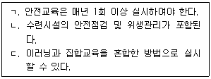
- ㄱ
- ㄴ
- ㄱ, ㄷ
- ㄴ, ㄷ
- ㄱ, ㄴ, ㄷ
(정답률: 알수없음)
56. 청소년 기본법상 청소년단체협의회의 기능이 아닌 것은?
- 청소년지도자의 연수와 권익 증진
- 청소년 관련 분야의 국제기구활동
- 청소년 관련 도서 출판 및 정보 지원
- 남ㆍ북청소년 및 해외교포청소년과의 교류ㆍ지원
- 국가 청소년정책에 관한 주요 사항을 심의ㆍ조정
(정답률: 알수없음)
57. 경험학습(experiential learning)이론에 관한 설명으로 옳지 않은 것은?
- 청소년의 흥미와 관심을 강조하고 있다.
- 미국 진보주의 교육에 영향을 받았다.
- 콜브(D. Kolb)는 경험학습 사이클을 제시하였다.
- 학습상황에서 청소년은 환경자극에 수동적으로 반응한다고 본다.
- 청소년의 경험을 학습과정에 통합하는 접근이다.
(정답률: 알수없음)
58. 칙센트미하이(M. Csikszentmihalyi)가 제시한 몰입(flow)경험의 특징으로 옳지 않은 것은?
- 자의식(self-consciousness)이 사라진다.
- 자신의 행동이 타인에 의해 통제되고 있음을 느낀다.
- 수행중인 과제에 관심이 집중된 상태이다.
- 행위와 인식의 일체감을 느낀다.
- 자신의 활동목적이 분명하다.
(정답률: 알수없음)
59. 청소년 관련법의 제정연도가 빠른 순서대로 옳게 나열한 것은?
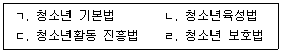
- ㄱ - ㄴ - ㄷ – ㄹ
- ㄱ - ㄴ - ㄹ – ㄷ
- ㄴ - ㄱ - ㄷ - ㄹ
- ㄴ - ㄱ - ㄹ – ㄷ
- ㄹ - ㄴ - ㄱ - ㄷ
(정답률: 알수없음)
60. 청소년활동 진흥법령상 위험도가 높은 청소년수련활동 프로그램에 해당하는 것을 모두 고른 것은?
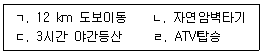
- ㄱ
- ㄱ, ㄹ
- ㄴ, ㄷ
- ㄱ, ㄴ, ㄹ
- ㄴ, ㄷ, ㄹ
(정답률: 알수없음)
61. 청소년활동 진흥법령상 청소년수련활동 인증위원회에 관한 설명으로 옳은 것은?
- 위원의 임기는 1년으로 한다.
- 위원장은 대통령이 지명한다.
- 위원 구성은 30명으로 한다.
- 구성ㆍ운영에 관한 사항은 여성가족부령으로 정한다.
- 한국청소년활동진흥원에 설치ㆍ운영한다.
(정답률: 알수없음)
62. 청소년수련활동인증제의 인증기준 중 공통기준에 해당하는 것은?
- 안전관리 계획
- 숙박관리
- 안전관리인력 확보
- 영양관리자 자격
- 이동관리
(정답률: 알수없음)
63. 화랑도의 세속오계(世俗五戒)에 해당하지 않는 것은?
- 사군이충(事君以忠)
- 임전무퇴(臨戰無退)
- 살생유택(殺生有擇)
- 군신유의(君臣有義)
- 교우이신(交友以信)
(정답률: 알수없음)
64. 청소년지도방법의 원리 중 효과성과 능률성을 반영하여야 한다는 원리는?
- 존중의 원리
- 효율성의 원리
- 다양성의 원리
- 협동성의 원리
- 자기주도의 원리
(정답률: 알수없음)
65. 청소년 기본법상 용어의 정의이다. ( )에 들어갈 내용은?
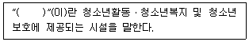
- 청소년회관
- 청소년기관
- 청소년쉼터
- 청소년시설
- 청소년단체
(정답률: 알수없음)
66. 청소년활동 진흥법령상 청소년수련시설에 관한 내용이다. ( )에 들어갈 내용은?
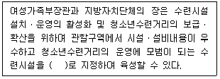
- 전문수련시설
- 인증수련시설
- 시범수련시설
- 우수수련시설
- 특화수련시설
(정답률: 알수없음)
67. 하트(R. Hart)가 제시한 참여사다리 8단계 모형에서 장식 단계(decoration)는 몇 단계에 해당하는가?
- 1단계
- 2단계
- 3단계
- 4단계
- 5단계
(정답률: 알수없음)
68. 청소년 기본법상 수련시설이 아닌 시설로서 그 설치 목적의 범위에서 청소년활동의 실시와 청소년의 건전한 이용 등에 제공할 수 있는 시설은?
- 유스호스텔
- 청소년수련거리
- 청소년특화시설
- 청소년이용시설
- 청소년문화의집
(정답률: 알수없음)
69. 청소년 기본법령상 청소년특화시설의 청소년지도사 배치기준에 관한 내용이다. ( )에 들어갈 내용은?
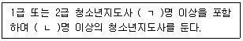
- ㄱ: 1, ㄴ: 1
- ㄱ: 1, ㄴ: 2
- ㄱ: 1, ㄴ: 3
- ㄱ: 2, ㄴ: 2
- ㄱ: 2, ㄴ: 3
(정답률: 알수없음)
70. 청소년활동 진흥법령상 청소년수련시설 운영대표자의 자격을 갖추지 못한 사람은?
- 청소년육성업무에 8년 종사한 사람
- 2급 청소년지도사 자격증 취득 후 청소년육성업무에 2년 종사한 사람
- 7급 일반직공무원으로서 청소년육성업무에 3년 종사한 사람
- 3급 청소년지도사 자격증 취득 후 청소년육성업무에 5년 종사한 사람
- ｢초ㆍ중등교육법｣제21조에 따른 정교사 자격증 소지자 중 청소년육성업무에 5년 종사한 사람
(정답률: 알수없음)
71. 청소년활동 진흥법상 청소년수련시설의 허가 또는 등록을 취소하는 경우에 관한 내용이다. ( )에 들어갈 내용은?
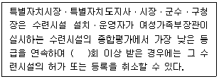
- 1
- 2
- 3
- 4
- 5
(정답률: 알수없음)
72. 프로그램 마케팅의 4P 모델에 해당하는 것을 모두 고른 것은?
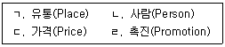
- ㄱ, ㄴ
- ㄱ, ㄷ
- ㄱ, ㄷ, ㄹ
- ㄴ, ㄷ, ㄹ
- ㄱ, ㄴ, ㄷ, ㄹ
(정답률: 알수없음)
73. 청소년활동 진흥법령상 청소년이용권장시설의 지정에 관한 내용이다. ( )에 들어갈 내용은?
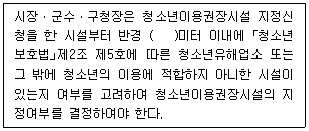
- 50
- 100
- 150
- 200
- 250
(정답률: 알수없음)
74. 청소년활동 진흥법상 숙박형 청소년수련활동의 계획을 신고하지 않아도 되는 경우를 모두 고른 것은?
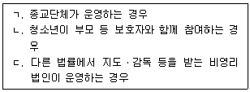
- ㄷ
- ㄱ, ㄴ
- ㄱ, ㄷ
- ㄴ, ㄷ
- ㄱ, ㄴ, ㄷ
(정답률: 알수없음)
75. 청소년활동 진흥법상 숙박기능을 갖춘 생활관과 다양한 청소년수련거리를 실시할 수 있는 각종 시설과 설비를 갖춘 종합수련시설은?
- 유스호스텔
- 청소년수련관
- 청소년수련원
- 청소년야영장
- 청소년문화의집
(정답률: 알수없음)